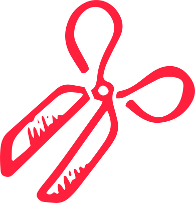

Rondbewegen op de kaart kan door te klikken en je muis rond te
slepen.
In- en uit-zoomen kan je met het scroll wiel doen.

Knippen
Knip een gaatje in je kaart door de schaar aan te klikken en de
muis ingedrukt te slepen.
Dan kan je kiezen welke kaart je wilt door op de pijltjes bovenaan
de kader te klikken.
Beweeg de kader rond door op het pijltjes icoon je muis te klikken
en hem dan te slepen.
De tijdlijn
De tijdlijn geeft altijd een handvol evenementen weer dat in de
geschiedenis van Antwerpen en België plaatsvonden.
Als je een vlag op je kaart aanklikt, dan wordt de tijdlijn
aangepast om de geschiedenis van die plek weer te geven.